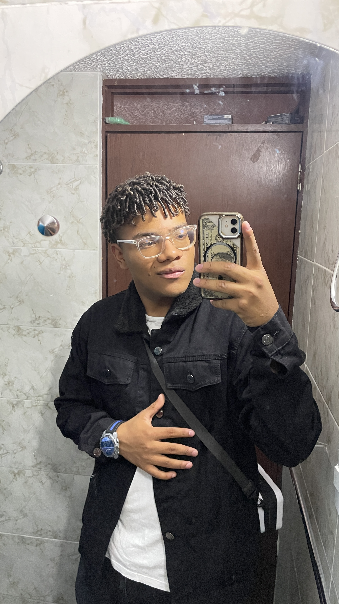

Tecnólogo en Desarrollo de Software · SENA
Desarrollador de software en formación, especializado en Java, JavaScript y Node.js. Combino mis conocimientos en programación con mi técnica en mantenimiento de equipos para aportar soluciones integrales y eficientes.
01 — Perfil profesional
Soy desarrollador de software en formación (etapa lectiva en el SENA), comprometido con el aprendizaje continuo y el crecimiento profesional. Estoy desarrollando habilidades en Java, JavaScript y Node.js, aplicándolas en proyectos prácticos.
Apasionado por la tecnología y el mantenimiento de equipos, busco integrar mis conocimientos técnicos en informática con habilidades de programación para aportar soluciones innovadoras y eficientes en entornos tecnológicos.
Con formación técnica en mantenimiento de equipos y cómputo, poseo habilidades prácticas para el diagnóstico y reparación de hardware, complementadas con conocimientos en programación que me permiten abordar problemas tecnológicos de forma integral.
Objetivo al finalizar el tecnólogo
Ejercer como Tecnólogo en Desarrollo de Software, capaz de diseñar, desarrollar y desplegar aplicaciones web y de escritorio, integrando conocimientos de backend con Java y Node.js, frontend con JavaScript y mantenimiento preventivo/correctivo de infraestructura tecnológica.
Áreas de interés
02 — Experiencia laboral
Formación académica
Diagnóstico, mantenimiento preventivo y correctivo de hardware. Instalación y configuración de sistemas operativos Windows y Linux. Redes LAN/WAN básicas.
Programación orientada a objetos con Java, desarrollo web con JavaScript y Node.js, bases de datos SQL, control de versiones con Git.
Experiencia laboral
Coordinación y montaje de eventos. Manejo de inventarios y materiales. Comunicación con proveedores y clientes. Trabajo bajo presión en entornos de alta demanda logística.
Atención al cliente, manejo de caja y coordinación con cocina. Desarrollo de habilidades de comunicación, empatía y trabajo en equipo en entornos de servicio de alto flujo.
03 — Proyectos realizados
Aplicación de escritorio en Java para gestionar inventario de equipos de cómputo, con CRUD completo y base de datos MySQL.
Página web personal con HTML, CSS y JavaScript vanilla. Diseño responsivo, secciones de proyectos y formulario de contacto.
API básica para gestión de usuarios construida con Express.js, manejo de rutas, middleware de autenticación y conexión a MongoDB.
Script en Python para diagnóstico automatizado de hardware: temperatura de CPU, estado de disco, RAM disponible y reporte en PDF.
04 — Habilidades
Habilidades de software
Habilidades de hardware
Habilidades blandas y laborales
Parte 2 — Actividades adicionales
Las actividades fuera del trabajo forman también el perfil profesional. Cada hobby aporta habilidades transversales directamente aplicables al mundo tech.
Libros de tecnología, programación y desarrollo personal. Aporta concentración, vocabulario técnico y pensamiento crítico.
Deporte en equipo que fortalece la comunicación, el trabajo colectivo, la estrategia y la tolerancia a la presión.
Analizar mecánicas de juego desarrolla lógica, resolución de problemas, pensamiento sistémico y atención al detalle.
Ensamble y optimización de computadores como pasatiempo. Refuerza el conocimiento de hardware y la actualización tecnológica constante.
Escuchar y explorar géneros musicales. Estimula la creatividad, la concentración y el equilibrio mental en jornadas de estudio intensas.
Rompecabezas y acertijos de lógica que entrenan el pensamiento abstracto y la paciencia, esenciales en depuración de código.
Cómo aportan al perfil tecnólogo
Lectura + puzzles → mejoran la capacidad de análisis de requerimientos y comprensión de documentación técnica en inglés.
Fútbol → el trabajo en equipo en campo se traduce directamente a metodologías ágiles y trabajo colaborativo en proyectos de software.
Armado de PCs + videojuegos → mantienen actualizado el conocimiento de hardware y estimulan el interés por la optimización de rendimiento.
05 — Referencias y contacto
Kevin Leonardo Barandica Llama
Tecnólogo en Mejoramiento de Software
Annar Health Technologies
📞 3046479450
Manfre José Ospino Benjumea
Auxiliar de Farmacia
Inversiones SALUMAX
📞 3145402667
Candri Acosta Caamaño
Técnico Integral Primera Infancia
Colegio Madre Paula Montal
📞 3008033954
El código es el medio.
El impacto es el objetivo.
— Daniel Felipe Ospino Acosta · 2025